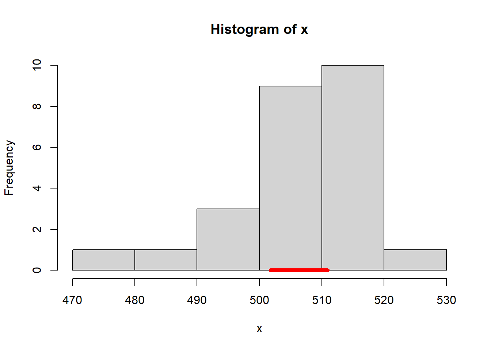

Estimation and Confidence Intervals
For loop
A for loop is used to iterate an instruction over a vector. The syntax of a for loop in R is:
for (val in sequence)
{
instruction
}print(val). The Fibonacci sequence is defined as : \[
x_{0}=0 \quad x_{1}=1\\
x_{i}=x_{i-1}+x_{i-2} \quad\forall i>1
\] Using a for loop, print the first 10 numbers of the Fibonacci sequence.
fib<-c(0,1)
# in R the vectors are index starting from 1
for(j in 3:10){
fib[j]<-fib[j-1]+fib[j-2]
}
print(fib)## [1] 0 1 1 2 3 5 8 13 21 34Examples
We want to create a matrix where the first row contains 200 observations taken from exponential distributions with rate \(\lambda\) equal to \(\frac{1}{16}\), the second with \(\frac{1}{22}\), and the third with \(\frac{1}{36}\).
# Vector of rates
r<-c(1/16,1/22,1/36)
# Let's create an empty vector that will store our matrix
M<-c()
# The sequence of this for cycle will be 1,2,3, the indexes of the r vector
for(i in 1:3){
# At each step we bind a column to M and store the resulting object in M
M<-cbind(M,rexp(n=200, rate = r[i]))
# To understand the process we print the first three rows of M at each step
print(head(M,n=3))
}## [,1]
## [1,] 4.76542
## [2,] 12.09825
## [3,] 39.69373
## [,1] [,2]
## [1,] 4.76542 66.59554
## [2,] 12.09825 46.78642
## [3,] 39.69373 20.33612
## [,1] [,2] [,3]
## [1,] 4.76542 66.59554 0.04889841
## [2,] 12.09825 46.78642 150.31582076
## [3,] 39.69373 20.33612 18.12132607For each column, we want to calculate the mean.
# The sequence of the for cycle will be 1,2,3 as the matrix M has 3 columns
# We define a vector that contains all the means
M_col_mean<-c()
for(j in 1:3){
M_col_mean<-c(M_col_mean,mean(M[,j]))
} Knowing that the mean of an exponential distribution of rate \(\lambda\) is \(\frac{1}{\lambda}\), plot the density function of the three exponential distributions and add to each one the mean and the sample mean.
par(mfrow=c(2,2)) # Layout with two columns and two rows
x.axis = seq(0, 50, length.out=1000)
for(i in 1:3){
y.axis = dexp(x.axis, rate=r[i])
plot(x.axis, y.axis, type="l",
ylab = '',xlab = '',
ylim=c(0,0.04))
# Add the sample mean,red circle
points(M_col_mean[i], y = 0, pch=16,col='red')
# Add the mean, blue triangle
points(1/r[i],y=0,pch=17,col='blue')
}
Exercises
Exercise 3.1
Draw 10 random samples of size \(N = 5\) from the standard normal distribution (\(\mu\) = 0, \(\sigma\) = 1),rnorm(). Calculate the mean of each sample. Calculate the mean of all 10 means.
# Sample creation
M<-rnorm(n = 5, mean=0, sd=1) #variable to store the samples
for(j in 1:9){
M<-cbind(M,rnorm(n = 5, mean=0, sd=1))
}
# Otherwise you can create an empty matrix 5x10
# and then use a for loop to fill it
# M<-matrix(NA, ncol = 10, nrow = 5)
# for(j in 1:10){
# M[,j]<-rnorm(n = 5, mean=0, sd=1)
# }
# Calculate the mean of each sample
M_col_mean<-c()
for(j in 1:10){
M_col_mean[j]<-mean(M[,j])
}
# Otherwise using the apply function
# we apply the function mean over each column of the matrix M
#M_col_mean<-apply(M, 2, mean)
# Calculate the mean of the means
M_mean<-mean(M_col_mean)
M_col_mean
M_mean## [1] -0.6406680 0.1388157 -0.8258367 0.2633669 1.0311602 -0.3484989
## [7] -0.2399858 1.0458175 -0.2040381 0.3388902
## [1] 0.05590231Plot the density function of the standard normal distribution. Using the function points() draw the sample means and the mean of means into the plot.
x.axis = seq(-3, 3, length.out=100)
y.axis = dnorm(x.axis, mean=0, sd=1)
plot(x.axis, y.axis, type="l")
for(i in 1:10) {
points(M_col_mean[i], y = 0, pch=4)
}
points(M_mean, y = 0, pch=4, col=2, lwd=3)
M<-rnorm(n = 25, mean=0, sd=1) #variable to store the samples
for(j in 1:9){
M<-cbind(M,rnorm(n = 25, mean=0, sd=1))
}
# Calculate the mean of each sample
M_col_mean<-apply(M, 2, mean)
# Calculate the mean of the means
M_mean<-mean(M_col_mean)
# plot
x.axis = seq(-3, 3, length.out=100)
y.axis = dnorm(x.axis, mean=0, sd=1)
plot(x.axis, y.axis, type="l")
for(i in 1:10) {
points(M_col_mean[i], y = 0, pch=4)
}
points(M_mean, y = 0, pch=4, col=2, lwd=3)
Exercise 3.2
A producer gives the information that the content of a pharmaceutical substance in the tablets of some preparation A is normally distributed with an expectation of 500 mg and with a variance of 10mg. To check this claim, the contents of 25 randomly chosen tablets are determined.
Load the study3.csv data frame and plot the histogram of the data, remember to select a reasonable choice of the parameter breaks.x<-read.table("./data/study3.csv",sep=";",header = TRUE)[[1]] # the values are separated by ; in the csv file
hist(x,breaks = 7)Determine a 95%-confidence interval for the expectation from the data:
Hint
Consider an i.i.d. sample of length \(n\) from \(X\sim N(\mu,\sigma)\) then: \[P\left(\bar{X}-z_{\alpha/2}\frac{\sigma}{\sqrt{n}}\leq \mu\leq \bar{X}+z_{\alpha/2}\frac{\sigma}{\sqrt{n}} \right)=1-\alpha\;,\] where \(z_{\alpha/2}\) is the \(\alpha/2\) critical value of a \(Z\sim N(0,1)\) distribution, namely \(P(Z\geq z_{\alpha})=\alpha\).
N=25
alpha = 0.05
MEAN = mean(x)
s = sd(x)
SEM = s / sqrt(N) # standard error of the mean
Z = qnorm(1 - alpha / 2, 0, 1)# calculate the critical values
lower_bound<-MEAN - Z * SEM # Lower Bound
upper_bound<-MEAN + Z * SEM # Upper Bound
print(paste0('the confidence interval is [',round(lower_bound,2),',',round(upper_bound,2),']'))## [1] "the confidence interval is [501.74,510.97]"Plot the confidence interval against the histogram, use segment function.
hist(x,breaks = 7)
segments(x0=round(lower_bound,2), y0=0, x1 = round(upper_bound,2), y1 = 0,col='red',lwd=5)
Given the confidence intervals, could you trust the producer? Change
- the sample size
- the mean
- the standard deviation
- the level of confidence.
Discuss changes and results.
Draw 100 random samples of size \(n = 25\) from the normal distribution (\(\mu\) = 500 mg, \(\sigma\) = 10 mg). Calculate for each one the 95%-confidence interval, how many of them fail to contain the true value?
# generate the data
M<-rnorm(n = 25, mean=500, sd=10) #variable to store the samples
for(j in 1:99){
M<-cbind(M,rnorm(n = 25, mean=500, sd=10))
}
M_conf<-matrix(nrow=2,ncol=100)
for(j in 1:100){
MEAN<-mean(M[,j])
SEM<-sd(M[,j])/sqrt(25)
z<-qnorm(1 - 0.05 / 2, 0, 1)
M_conf[1,j]<-MEAN - Z * SEM # Lower Bound
M_conf[2,j]<-MEAN + Z * SEM # Upper Bound
}
# percentage of interval that contains the true value for the mean
sum((M_conf[1,]<=500 & 500<=M_conf[2,]))/100## [1] 0.94#EXTRA
# usage of if else statement to give the color to the segments
plot.new()
plot(1, type = "n", xlab = "", ylab = "",xlim = c(0, 100), ylim = c(min(M_conf[1,j])-10, max(M_conf[2,j])+10))
for(j in 1:100){
segments(x0=j,y0=M_conf[1,j],x1=j,y1=M_conf[2,j],col=ifelse((M_conf[1,j]<=500 & 500<=M_conf[2,j]),'black','red'))
}
abline(h=500,col='red')